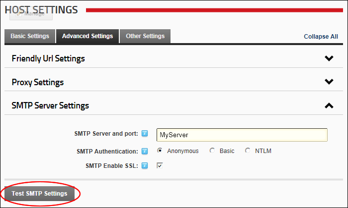

Testing Outgoing Email Settings
How to test the outgoing mail settings that apply to all sites within this DNN installation.
The SMTP Server must be configured. See "Setting the SMTP Server and Port"
- Navigate to Host >
 Host Settings.
Host Settings.
- Select the Advanced Settings tab.
- Expand the SMTP Server Settings section.
- Click the Test SMTP Settings button.

This sends a test email to the Host account. This displays one of the following messages:
- If the test is successful the Email Sent Successfully message is displayed.
- If the test is not successful, a message describing the error is displayed.
Tip: If you used the web.config workaround to send emails without a SMTP server, look in the folder specified for the .eml file.